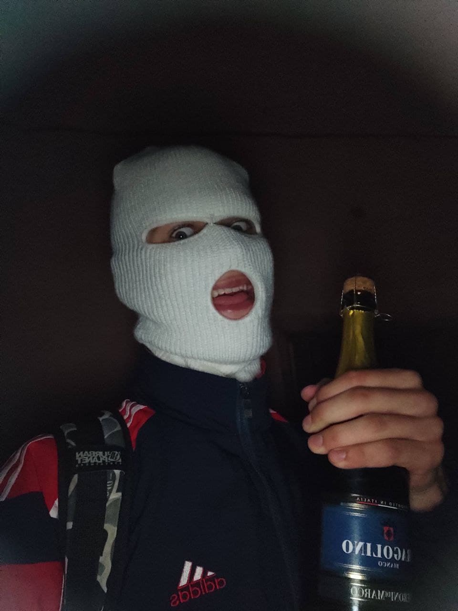

| 
|
Я навчаюсь на 2-му курсі
Навчаюсь на спеціальності Кібербезпека.
В ВНУ НАУ.
Зараз вивчаю мови програмування Python та C++.
В вільний час займаюсь Воркаутом це спорт основним принципом якого є використання в якості спорт снарядів турники , бруси , різні горизонтальні перекладини які можна знайти в місті для виконання різних трюків різної складності , зараз виконую трюки середнього рівня складності.
Раніше , коли ходив в школу , то професійно займався стрільбою , зайняв перше місце по козацькій стрільбі серед 10-11 класів по Волинській області.
Коли був малий займався також карате , бальними танцями, малюванням.
|